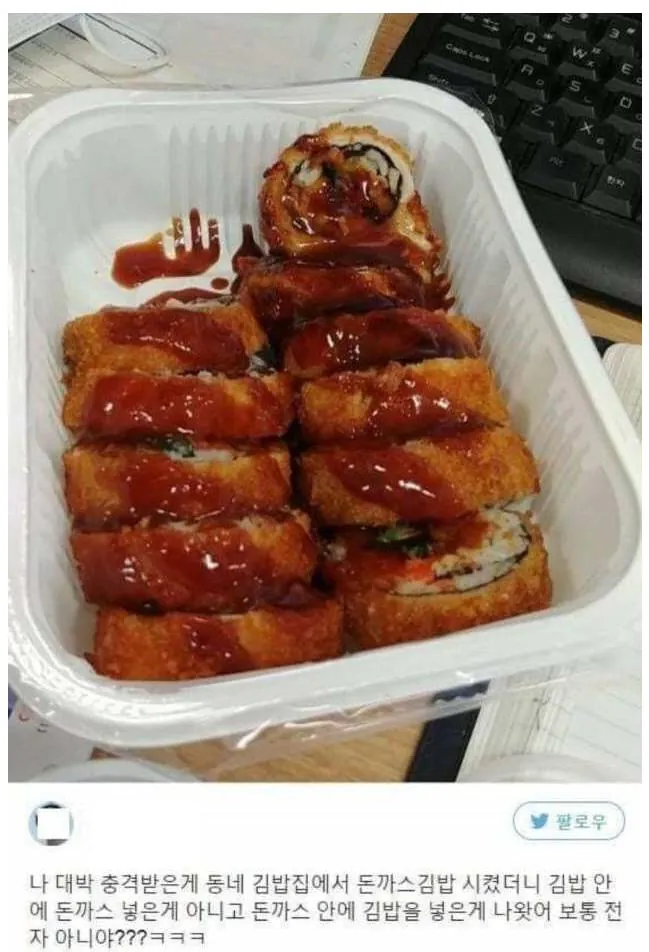

상식을 뒤집은 돈까스김밥.jpg
댓글
김이랑 튀김옷 사이에 하얀 층 있는 거 보면 고기가 얇게 있긴 있나봄
보통 옜날 돈가스가 고기를 두들겨서 얇게 펴서 만드는데 김밥을 그 고기 안에 넣고 만다음에 겉에 계란물하고 방가루를 입혀서 통째로 튀겨낸걸로 보이네
저정도 고기양이면 김밥 5천원에 고기 4천원~5천원 해서 싸게팔면 7천원 많이 받으면 만원정도 할거 같네
악어새가 악어가 아니듯 저건 김밥돈까스라고 해야한다고 생각해요
비유가 잘못되었다 생각해요...
저건 김밥까스라고 해야지
이게 마따
일단 개 맛돌이 일거 같아
고기로 둘러져 있는거면 혁명이고 아닌거면 반역임
김밥을 고기가 둘러싼 형태같긴 한데..
안둘러져있으면 걍 김밥튀김이지 ㅋㅋㅋㅋ 둘러져 있는듯
김밥 튀김 아님?
맛잘알
저게 더 맛있어보임
맛있어보여
표피를 둘러싼 귀두같은 느낌인가?
저게 더 끌리는데 ㅋㅋ
매운 돈까스 김밥 맛있었는데....
어디에 파는걸까 먹고싶다
뭐지
맛있을거같은데
돈가스김밥은 김밥안에 돼지고기가 들어간 것을 기대하고 사는건데
저래버리면 저건 그냥 김밥 튀김? 같은거잖아
뜨거운 단무지만큼 기분나쁜게 없는데
의외로 김밥튀김 맛있음. 옛날에 분식집에 김밥튀김 있으면 무조건 사먹었었는데 요즘은 잘 안보이더라.
떡볶이 양념 찍어먹으면 개맛있음
맛있겠는데
속이 기름에 쩔겠는데
김밥을 뭐하러 익혀야하는데...
부정적인 애들 존나많네
김밥튀김도 맛있는데 겉면에 돈까스면 더맛있는거지
존나 맛있겠다
가격을 들어봐야할거같고 김밥겉에 고기가 있는지 알아봐야할거같은뎅
둘다 합리적이면 맛날듯